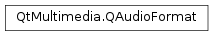

QAudioFormat¶
Synopsis¶
Functions¶
- def
__eq__(other) - def
__ne__(other) - def
byteOrder() - def
bytesForDuration(duration) - def
bytesForFrames(frameCount) - def
bytesPerFrame() - def
channelCount() - def
codec() - def
durationForBytes(byteCount) - def
durationForFrames(frameCount) - def
framesForBytes(byteCount) - def
framesForDuration(duration) - def
isValid() - def
sampleRate() - def
sampleSize() - def
sampleType() - def
setByteOrder(byteOrder) - def
setChannelCount(channelCount) - def
setCodec(codec) - def
setSampleRate(sampleRate) - def
setSampleSize(sampleSize) - def
setSampleType(sampleType)
Detailed Description¶
The
PySide2.QtMultimedia.QAudioFormatclass stores audio stream parameter information.An audio format specifies how data in an audio stream is arranged, i.e, how the stream is to be interpreted. The encoding itself is specified by the
PySide2.QtMultimedia.QAudioFormat.codec()used for the stream.In addition to the encoding,
PySide2.QtMultimedia.QAudioFormatcontains other parameters that further specify how the audio sample data is arranged. These are the frequency, the number of channels, the sample size, the sample type, and the byte order. The following table describes these in more detail.
Parameter Description Sample Rate Samples per second of audio data in Hertz. Number of channels The number of audio channels (typically one for mono or two for stereo) Sample size How much data is stored in each sample (typically 8 or 16 bits) Sample type Numerical representation of sample (typically signed integer, unsigned integer or float) Byte order Byte ordering of sample (typically little endian, big endian) This class is typically used in conjunction with
PySide2.QtMultimedia.QAudioInputorPySide2.QtMultimedia.QAudioOutputto allow you to specify the parameters of the audio stream being read or written, or withPySide2.QtMultimedia.QAudioBufferwhen dealing with samples in memory.You can obtain audio formats compatible with the audio device used through functions in
PySide2.QtMultimedia.QAudioDeviceInfo. This class also lets you query available parameter values for a device, so that you can set the parameters yourself. See thePySide2.QtMultimedia.QAudioDeviceInfoclass description for details. You need to know the format of the audio streams you wish to play or record.In the common case of interleaved linear PCM data, the codec will be “audio/pcm”, and the samples for all channels will be interleaved. One sample for each channel for the same instant in time is referred to as a frame in Qt Multimedia (and other places).
-
class
PySide2.QtMultimedia.QAudioFormat¶ -
class
PySide2.QtMultimedia.QAudioFormat(other) Parameters: other – PySide2.QtMultimedia.QAudioFormatConstruct a new audio format.
Values are initialized as follows:
PySide2.QtMultimedia.QAudioFormat.sampleRate()= -1PySide2.QtMultimedia.QAudioFormat.channelCount()= -1PySide2.QtMultimedia.QAudioFormat.sampleSize()= -1PySide2.QtMultimedia.QAudioFormat.byteOrder()=QAudioFormat.Endian(QSysInfo.ByteOrder)PySide2.QtMultimedia.QAudioFormat.sampleType()=QAudioFormat.Unknowncodec()= “”
Construct a new audio format using
other.
-
PySide2.QtMultimedia.QAudioFormat.SampleType¶ Constant Description QAudioFormat.Unknown Not Set QAudioFormat.SignedInt Samples are signed integers QAudioFormat.UnSignedInt Samples are unsigned intergers QAudioFormat.Float Samples are floats
-
PySide2.QtMultimedia.QAudioFormat.Endian¶ Constant Description QAudioFormat.BigEndian Samples are big endian byte order QAudioFormat.LittleEndian Samples are little endian byte order
-
PySide2.QtMultimedia.QAudioFormat.byteOrder()¶ Return type: PySide2.QtMultimedia.QAudioFormat.EndianReturns the current value.
-
PySide2.QtMultimedia.QAudioFormat.bytesForDuration(duration)¶ Parameters: duration – PySide2.QtCore.qint64Return type: PySide2.QtCore.qint32Returns the number of bytes required for this audio format for
durationmicroseconds.Returns 0 if this format is not valid.
Note that some rounding may occur if
durationis not an exact fraction of thePySide2.QtMultimedia.QAudioFormat.sampleRate().
-
PySide2.QtMultimedia.QAudioFormat.bytesForFrames(frameCount)¶ Parameters: frameCount – PySide2.QtCore.qint32Return type: PySide2.QtCore.qint32Returns the number of bytes required for
frameCountframes of this format.Returns 0 if this format is not valid.
-
PySide2.QtMultimedia.QAudioFormat.bytesPerFrame()¶ Return type: PySide2.QtCore.intReturns the number of bytes required to represent one frame (a sample in each channel) in this format.
Returns 0 if this format is invalid.
-
PySide2.QtMultimedia.QAudioFormat.channelCount()¶ Return type: PySide2.QtCore.intReturns the current channel count value.
-
PySide2.QtMultimedia.QAudioFormat.codec()¶ Return type: unicode Returns the current codec identifier.
-
PySide2.QtMultimedia.QAudioFormat.durationForBytes(byteCount)¶ Parameters: byteCount – PySide2.QtCore.qint32Return type: PySide2.QtCore.qint64Returns the number of microseconds represented by
bytesin this format.Returns 0 if this format is not valid.
Note that some rounding may occur if
bytesis not an exact multiple of the number of bytes per frame.
-
PySide2.QtMultimedia.QAudioFormat.durationForFrames(frameCount)¶ Parameters: frameCount – PySide2.QtCore.qint32Return type: PySide2.QtCore.qint64Return the number of microseconds represented by
frameCountframes in this format.
-
PySide2.QtMultimedia.QAudioFormat.framesForBytes(byteCount)¶ Parameters: byteCount – PySide2.QtCore.qint32Return type: PySide2.QtCore.qint32Returns the number of frames represented by
byteCountin this format.Note that some rounding may occur if
byteCountis not an exact multiple of the number of bytes per frame.Each frame has one sample per channel.
-
PySide2.QtMultimedia.QAudioFormat.framesForDuration(duration)¶ Parameters: duration – PySide2.QtCore.qint64Return type: PySide2.QtCore.qint32Returns the number of frames required to represent
durationmicroseconds in this format.Note that some rounding may occur if
durationis not an exact fraction of thePySide2.QtMultimedia.QAudioFormat.sampleRate().
-
PySide2.QtMultimedia.QAudioFormat.isValid()¶ Return type: PySide2.QtCore.boolReturns true if all of the parameters are valid.
-
PySide2.QtMultimedia.QAudioFormat.__ne__(other)¶ Parameters: other – PySide2.QtMultimedia.QAudioFormatReturn type: PySide2.QtCore.boolReturns true if this
PySide2.QtMultimedia.QAudioFormatis not equal to theotherPySide2.QtMultimedia.QAudioFormat; otherwise returns false.All elements of
PySide2.QtMultimedia.QAudioFormatare used for the comparison.
-
PySide2.QtMultimedia.QAudioFormat.__eq__(other)¶ Parameters: other – PySide2.QtMultimedia.QAudioFormatReturn type: PySide2.QtCore.boolReturns true if this
PySide2.QtMultimedia.QAudioFormatis equal to theotherPySide2.QtMultimedia.QAudioFormat; otherwise returns false.All elements of
PySide2.QtMultimedia.QAudioFormatare used for the comparison.
-
PySide2.QtMultimedia.QAudioFormat.sampleRate()¶ Return type: PySide2.QtCore.intReturns the current sample rate in Hertz.
-
PySide2.QtMultimedia.QAudioFormat.sampleSize()¶ Return type: PySide2.QtCore.intReturns the current sample size value, in bits.
-
PySide2.QtMultimedia.QAudioFormat.sampleType()¶ Return type: PySide2.QtMultimedia.QAudioFormat.SampleTypeReturns the current
QAudioFormat.SampleTypevalue.
-
PySide2.QtMultimedia.QAudioFormat.setByteOrder(byteOrder)¶ Parameters: byteOrder – PySide2.QtMultimedia.QAudioFormat.EndianSets the
PySide2.QtMultimedia.QAudioFormat.byteOrder()tobyteOrder.
-
PySide2.QtMultimedia.QAudioFormat.setChannelCount(channelCount)¶ Parameters: channelCount – PySide2.QtCore.intSets the channel count to
channels.
-
PySide2.QtMultimedia.QAudioFormat.setCodec(codec)¶ Parameters: codec – unicode Sets the codec to
codec.The parameter to this function should be one of the types reported by the
QAudioDeviceInfo.supportedCodecs()function for the audio device you are working with.
-
PySide2.QtMultimedia.QAudioFormat.setSampleRate(sampleRate)¶ Parameters: sampleRate – PySide2.QtCore.intSets the sample rate to
samplerateHertz.
-
PySide2.QtMultimedia.QAudioFormat.setSampleSize(sampleSize)¶ Parameters: sampleSize – PySide2.QtCore.intSets the sample size to the
sampleSizespecified, in bits.This is typically 8 or 16, but some systems may support higher sample sizes.
-
PySide2.QtMultimedia.QAudioFormat.setSampleType(sampleType)¶ Parameters: sampleType – PySide2.QtMultimedia.QAudioFormat.SampleTypeSets the
PySide2.QtMultimedia.QAudioFormat.sampleType()tosampleType.
© 2018 The Qt Company Ltd. Documentation contributions included herein are the copyrights of their respective owners. The documentation provided herein is licensed under the terms of the GNU Free Documentation License version 1.3 as published by the Free Software Foundation. Qt and respective logos are trademarks of The Qt Company Ltd. in Finland and/or other countries worldwide. All other trademarks are property of their respective owners.